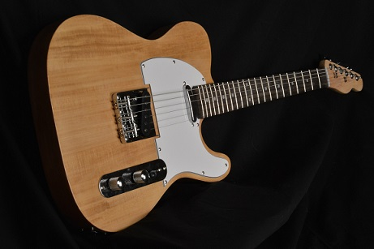

Telecaster
Entre todos os tipos de guitarra, a Telecaster tem um lugar especial. Apesar de não ser o mais famoso, esse é o modelo que pode ser considerado a origem das guitarras de corpo sólido. Desenvolvido originalmente pela Fender, no início dos anos 1950, o instrumento foi inicialmente chamado de Broadcaster.
Assim como a Fender Stratocaster, a Telecaster também é uma guitarra versátil, podendo ser utilizada em boa parte dos estilos musicais e sendo usada em vários gêneros, como o country, reggae, rock, pop, folk, soul, rhythm and blues, blues, jazz, punk, e o heavy metal.
